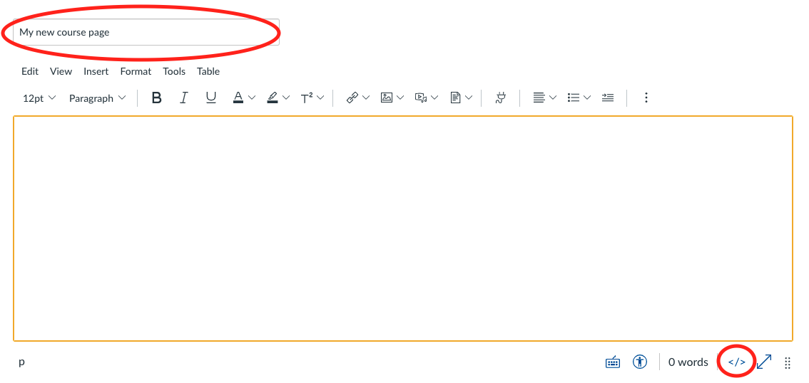

Working with HTML & CSS
In order to be able to fully use all the options available for this template, you will have to be able to modify some of the parts contained in the html files that compose the template, as well as the css which defines characteristics of the template such as the colors used for each part, from the navigation bar to the buttons.
This template is based on several HTML files that you may view in the files section within Canvas.
In order to customize the template to your needs and content, you
will have to modify these html files, but no worries, it is quite
an easy task to accomplish.
Let's start by learning how to view the content within these
files. So download one of the HTML files as well as the
general.css file and keep reading.
In order to access the HTML (or CSS) content there are several
options available depending on your operating system. Here I will
explain the basic options available for both Windows and MacOS. If
your operating system is different from these, I'm sure there will
be a similar option available.
My recommendation here is to download a code editor. There
are great options and many of them for free. So if you don't mind
downloading one, skip right to the "Code Editor" part. If, on the
other hand, you would rather not download any program, in both
operating systems you may view the content in the default text
editor pre-installed by default in every computer. Right below I
explain how you may open HTML files in these editors. There are
also online options that let you both modify the files and
view the results at the same time. If you're interested in these
ones, you may skip directly to the "Online editor" section.
Windows
In the case of Windows, you may open the HTML file using the "Notepad". You can do this by right clicking on the HTML file and then Open with > Notepad:
If you can't see the "Notepad" option, the you can click on "Choose another app" and the find the Notepad application and use it for opening the file.
Once you have opened the file you should be able to see the HTML code in the file where you will be able to make all of the changes to your website:
MacOS
In the case of MacOS, you may open the HTML file using the "TextEdit". To do so, you will have to first open the TextEdit app. You may do this by opening spotlight and simply type "TextEdit".
Once you have opened TextEdit, click on the top menu on File > Open.
The find the HTML file you want to open, select it, click on the bottom on the "Options" button and select "Ignore rich text commands" and then click on the "Open" button.
Once you have opened the file you should be able to see the HTML code in the file where you will be able to make all of the changes to your website:
Code Editor
In case you would like to use a Code Editor, there are many
options in the market. My curretn recommendation is
Visual Studio Code
which you may download from their official website.
These editors have many advantages, such as highlighting the
different parts of the code so that you may see more clearly what
you are looking for. Also, there are many plugins you may add that
will help you edit and creat things faster. Here is how you could
see the same content as I previously showed in the text editors:

[In this image the code is colored using the Monokai template]
To open the file you may follow the same steps as defined earlier
for both Windows and MacOs switch using the corresponding code
editor instead of the "Notepad" or "TextEdit" applications.
Once you are done editing the file, you may view the results in
your browser before uploading it to Canvas, this way you can make
sure that what you are uploading is what you expect it to be.
Probably the system will have identified the .html extension for
the file and suggest opening it with a browser, so simply by
double clicking on the file, it should open up in the browser
itself. If it doesn't, then you can either drag and drop the file
over the browser or right click on the file and choose to open it
with the browser of your choice.
Once you have opened the file in the browser, you should be able
to see the final design:

Important!: Remember to include the "general.css" as well at the same level as the html files, since the css includes the styling for the different html files, otherwise the page may be shown differently than in Canvas.
Online Editor
In case you would like to use an Online Editor, there are as well
several options available for free. One of the options I tend to
use more is
replit.
First you will have to create an account and then once you're in
your dashboard, you may follow the next steps to load the content.
On your dashboard, click on the plus sign button of the create
section.
On the modal that will open up, choose the HTML, CSS, JS option and give your repl a name. Then click on the create repl button.
You will now see a new project that has been filled up with 3 different files. 1 HTML file (.html), 1 CSS file (.css) and 1 JavaScript file (.js). You can simply ignore those.
We will now proceed to upload the html files from the template. Click on the "upload file" option as shown in the image below and upload the files you wish to view/edit:
Important!: Remember to include the "general.css" as well
at the same level as the html files, since the css includes the
styling for the different html files.
Once you have uploaded the html files and the general.css file you
should end up with something like this:
You may see that like in the downloadable code editor, the different parts of the code have different colors, making it easier to read and find what you are looking for within the code. Once you are done making any modifications to the content of the page, you may click on the "Run" button at the top of the screen and then you'll be able to see the resulting website on the right panel:
This is all regarding how to open and edit an HTML/CSS file. Please check out the remaining parts of the documentation to learn how to upload, link and personalize these files within the template.
Creating Pages in Canvas
Creating a page using the template is quite easy and shouldn't take you more than 5 minutes. Let's see how this can be done.
Given this template is based on HTML & CSS files, the first thing we will have to do is to upload these files into the Files section within Canvas and then click on the upload button on the top right corner.
Once you have the html file for the corresponding page and the css in the same folder, the content should loook something like the following:
Now, if you click on the html file, you should be able to view the content of the web page:
Now, in order to show this content within a Canvas page, we will
have to do the following.
First, access the Pages section within Canvas and click on the
"+Page" button on the top right:
When creating a page, give the page the name you prefer and then click on the "Switch to html editor" button on the bottom right side of the content field:

Now copy and paste the following code into the editor:
<div>
<iframe id="inlineFrameExample" style="height: 100vh; width:
100%" title="Inline Frame Example"
src="../file_contents/course%20files/Folder%20Name%201/Folder%20Name%202/filename.html"
allow="fullscreen"
data-api-endpoint="../file_contents/course%20files/Folder%20Name%201/Folder%20Name%202/filename.html"
data-api-returntype="File" ></iframe>
</div >
Here, you will need to replace the parts in bold with the corresponding folder structure where your file is stored. Spaces in between words will need to be replaced with "%20". Let's take a look at an example:
Here, the files are stored in the following folders route: Example
1 > Example 2 > frontpage.html. Therefore, the code to include in
the page should look like this:
<div>
<iframe id="inlineFrameExample" style="height: 100vh; width:
100%" title="Inline Frame Example"
src="../file_contents/course%20files/Example%201/Example%202/frontpage.html"
allow="fullscreen"
data-api-endpoint="../file_contents/course%20files/Example%201/Example%202/frontpage.html"
data-api-returntype="File" ></iframe>
</div >
The result should be something like the following:
Now, if you try to switch back to the rich editor from the html editor when editing the page, you will see that the page doesn't load and that you can view the following indicating that the page couldn't be found:
Don't worry about this message. Just make sure that when you save
the page, you are able to view the html content you had previously
created.
This is the result of the example html file being included into a
page:
Now you are ready to upload any of your custom html files and view them directly as part of your course.
Customizing your template
The template has been created in a way that with some little changes, you will be able to change the look and feel of your own course. The key part here: theme colors.
The course template is composed of 2 key parts:
- HTML files with different pages you may include in your course
- General CSS file including styles applied to the HTML pages
In this part of the documentation we are going to focus on the CSS
file, what basic changes we can make to adapt the design to our
brand colors and how and where we can include additional
modifications.
Let's start by opening the "general.css" file you should have
found within the template files. If you are not sure how to open
this file, please check the "View HTML" section of this
documentation.
Once you open it, you should be able to see something like the
following:
In this file I have already enable several combinations of colors
described as "themes". You may view them within the different
modules of this template course. So if you like any of the
existing themes, the only thing you need to do is comment the code
that is active and uncomment the theme you want to use.
Let's go through an example:
In the template, by default, you will see the following lines of
code at the top of the document:
With this initial css, if you load the frontpage, you should be able to view a content like the following one:
If you are using a code editor, either locally or online, you will
be able to differentiate between comments just by the color
itself. Otherwise, if you are viewing the code in plain text, you
can identify the comments because they start with "/*" and end
with "*/". This is common to all css files.
So after modifying the comments, the code should now look like
this:
And this would be the resulting view of the web page when loaded:
How do I use my own colors?
As you have seen so far, modifying the colors is quite easy and
fast. In order to customize these colors from the ones included in
the template, we will be working with the same piece of code.
Let's go back to the css code.
Here you may see there are various elements that define the
template. Let's focus on one of those lines to better understand
it. For instance, the first line:
This line is composed of 2 parts divided by a colon (":"). The
first part includes the name of the variable that is then used
along the rest of the css file and the second part defines the
color, "#003057" in this case.
Therefore, in order to modify the main color, we only need to
modify that second part:
Here, the colors are defined in hexadecimal format, but bear in
mind that in css other formats are also accepted. You may learn
more about this
here. If you are not sure what colors to use in your course or what
colors combine better with each other, you may take a look at the
tools for picking colors
in Google's Material design website, or at
Adobe's color website.
As an example, let's choose a red color as an alternative. The one
I will be using has the following hexadecimal codification:
#F44336. Now, after modifying the code we would end up with
something like this:
After saving the css file and uploading it again into canvas, we can see that the design has been modified and the result is the following:
How do I modify only one of the pages?
Imagine you have a design applied to all the pages, but there is
one you want it to be different. The most straightforward and
fastest way of doing so is by including some of the css parts into
the specific html file.
Let's go through an example. Getting back to the previous css code
included in the general.css file, we can view the following code:

Now, in order to just modify one of the pages, you may include the css code from the general.css file surrounded by "style" tags and then just customize whatever part you want. This is an example of how the code would look after including the color variables:
So now, if we make any modifications over this code within the html file, it will only affect this one page and the remaining pages will still have the previous styling.
Can I include my own code?
Of course you can! What's even more, I encourage you to do so and you'll be able to create amazing things with it. Since this templates works by loading files into Canvas, you may include any parts accepted normally in any website. Therefore you could even include an additional JavaScript file with additional logic and functionality that may take your course even further.
Understanding the HTML content
The template is composed of several parts and pieces each showing differently within the page when it is loaded in a browser. Understanding what they are will help you edit the content more easily.
The content within the page is divided into different parts, some are text, otheres are composed of images, and so on. In order to make it easier for you to identify which part is which, the code has been tagged to indicate which part it is representing. So when you open an html file, you will be able to view the different blocks faster and also if you want to mix things up, you can copy paste any of those blocks in a different page. This is an example of how the comments indicating such block look:
Now, these blocks can be divided into 2 subsets. Depending on the type, you may need to carry out a different process if you want to use it somewhere else. These are individual blocks and group blocks.
Individual blocks
These are blocks composed of one single element and that aren't
related to other elements within the page. You can copy these ones
freely and paste them anywhere you want.
To do so, simply copy from the starting comment down to the ending
comment for that block and then paste it wherever you want to
include it afterwards.
Let's get into an example. We'll copy one of the boxes in the
second tab of the frontpage. This is the code:
And this is it's view:
Then we will paste it under the video section of the page 1. Here is the resulting view:
Group blocks
These block can be a little bit more tricky. This is because they
are composed of more than one part and they don't necessarily are
one after the other. A clear example is the toolbar at the top of
this page.
Here you can see that there are several tabs/options and then each
of the options has its own content. Therefore, when reusing these
tabs you will have to copy 2 elements independently.
First, there is the top bar itself with each of the elements. This
is the one used in this page. I have collapsed all the elements
and left the last one open so you may view its content:
Secondly, the content itself. Here is the beginning of the content part:
Now this content needs to be related to the top bar so when you click on one of the options, that element becomes viewable. This is done through the href field in the top bar element:
And the id element in the content corresponding part:
This way, whenever the option in the menu is clicked, the
corresponding content will be shown in the page.
Pay attention to the href field, as the corresponding id from
the content must be preceded by a hashtag symbol ("#").
This are the main components building the page and now that you
know how they work, you can use them freely around your course.
Canvas links
To relate content more easily within the course, you may use links to the different pages improving the user experience. Here is how you can do that.
In this part, we are going to go through the several different
links you may want to use within your content. For instance, you
may want to embed an image, show a video, link to another page or
module, or link to a file you want the students to download from
Canvas. In all of the cases, the content is stored within Canvas.
I'll divide this into several parts that you may check depending
on what it is you want to include.
Images
Including images in the html files is quite straightforward. Let's
take a look at an example.
Let's say we have the following file structure in Canvas:
Here we want to upload an image into the
course-images folder and then use it within our
frontpage.html file which is in the route Example 1 >
Example 2.
So we'll upload the following image into Canvas:

This is how it will now look in the Files section:
Now we'll go back to the frontpage.html file and open it in the second tab section where there are cards with images included in them, and we will modify the image in the first card:
Here we'll modify the src part within the image tag. For doing so, we fist need to think on where the image is stored in relation to the html file. In this case, if we were to navigate from the html file to the image we would need to go up 2 folders (Example 2 and then Example 1), and then get into the course-images folder where the image is stored.
Therefore, for the route we need to specify 2 dots ".." per folder
we need to move up and then the corresponding folder/s where the
file is stored. So, in this case, the resulting route would be the
following:
../../course-images/201611-S7II-Carcassonne_0150.JPG
And this would be the resulting code for the image:
Now we update the html in Canvas and we can view the result:
Videos
The code to embed a video in the page may vary depending on the
provider where the video is stored. Generally, the provider will
give you some code you may just copy and paste into wherever you
want within the html file. For instace, let's take a look at this
video
uploaded to YouTube.
If you take a look at the sharing options, you may see there is
one called "Embed":
Once you click on it, you will be able to view a piece of code beginning with "iframe":
You can just copy this code and then paste it in the corresponding html file. Once you're done, you should have something like this:
Here you may see there are several parts composing this video such
as the width and height of the box where the video will be
presented within the page. For this template, the parts where
videos have been included use a width of 560 and a height
of 315, but feel free to use whatever dimensions may suit
you best.
In case of embedding from a different website or video provider,
you should find something similar, where the source url varies as
well as some other aspects. Here is another example for a video
stored in vimeo:
As you can see, they are both quite similar.
Pages/Modules
When creating content that relates several pages/modules between
each other, you may want to include links from one page to
another.
You can obtain these links very easily from the Canvas website in
the following way:
Pages
To obtain the direct link to a page within Canvas, first access the Pages section in Canvas and view all pages:

Then, find the page you want to link and right click on its name and then on copy link address:
Now you can just go to your html file and include it wherever you
want by using a hyperlink tag. Here is an example:
<a
href="https://canvas.instructure.com/courses/123456/pages/my-new-course-page">Hyperlink
text</a>
Modules
The process for the modules is pretty similar to the one of pages, but instead you will have to access the modules section in Canvas:
Now, just like with the pages, right click on the module you want to link and then on copy link address:
Now you can just go to your html file and include it wherever you
want by using a hyperlink tag. Here is an example:
<a
href="https://canvas.instructure.com/courses/123456/modules/items/1574192">Hyperlink
text</a>
Files
You may also want to include files that have been uploaded to
Canvas for students to download. One way to do this, is by
creating a hyperlink tag (just like the one for pages/modules) and
use a route that is obtained in the same way as for an image. That
is, relative to the html file. Let's see an example.
This is our current file structure within Canvas:
Now we'll create a new folder within Example 1 and inside that folder store a .docx file named "file-test":
Now, just like we did with the images, we'll use 2 dots, "..", for
each folder we need to move up and then we'll write the
corresponding path to the file we have just stored:
Therefore, the finel hyperlink would be something like this:
<a href="../file-test-folder/file-test.docx">Click to
download file</a>
Now, if we add this to the frontpage.html file, we can see that
when we click on the link, it automatically downloads the
indicated file:
Now you are ready to include any file within your course and have students download it in just 1 click.